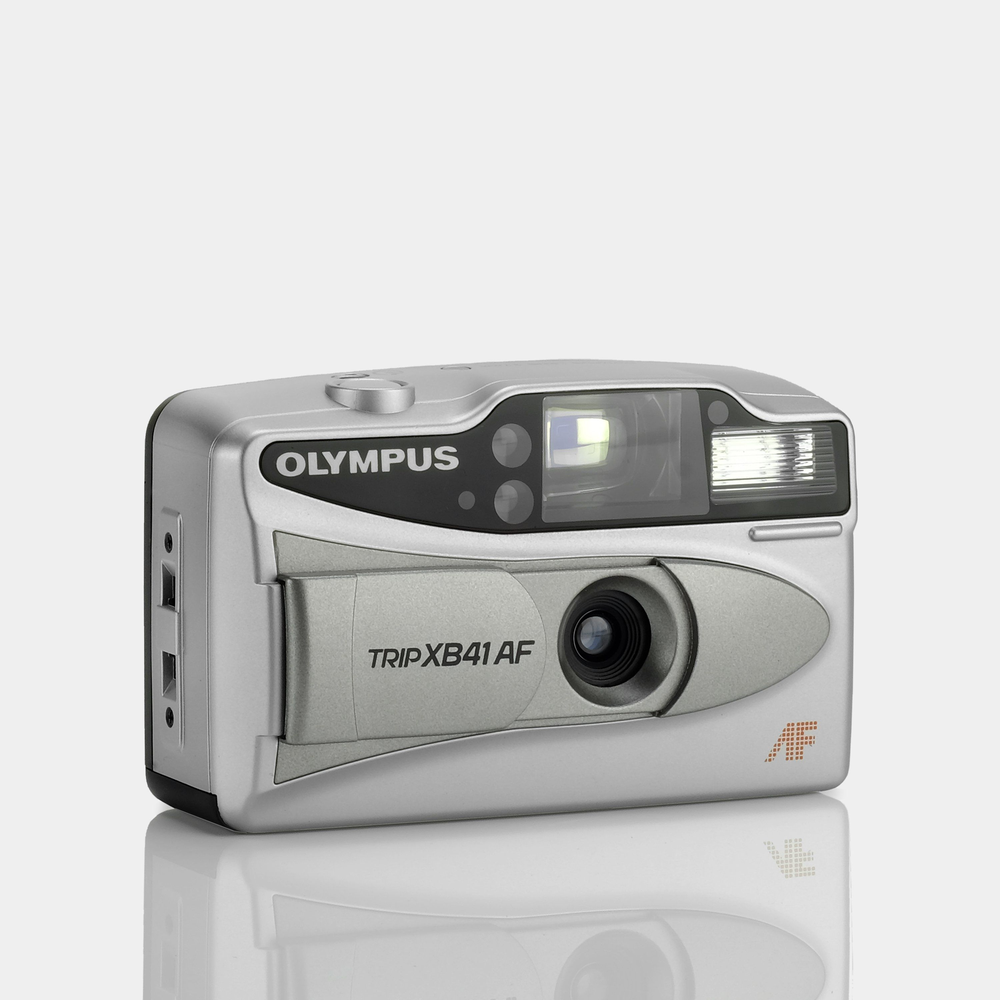

A movie camera (also known as a film camera and cine-camera) is a type of photographic camera that rapidly takes a sequence of photographs, either on an image sensor or onto film stock, in order to produce a moving image to project onto a movie screen. In contrast to the still camera, which captures a single image at a time, by way of an intermittent mechanism, the movie camera takes a series of images; each image is a frame of film. The strips of frames are projected through a movie projector at a specific frame rate (number of frames per second) to show a moving picture. When projected at a given frame rate, the persistence of vision allows the eyes and brain of the viewer to merge the separate frames into a continuous moving picture




Let's watch together, shall we?
kodak colorplus 200 vs kodak gold 200
kodak gold 200 vs kodak ultramax 400